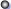
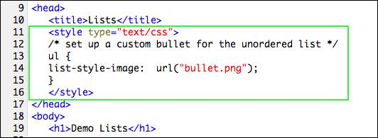
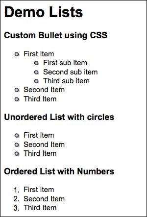
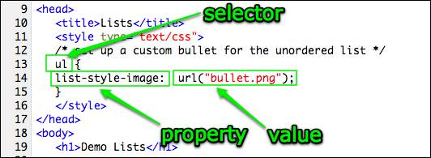

Custom Bullet Images
With a little CSS (Cascading Style Sheet) magic you can add your own custom bullets.
(1) Save this bullet image by right-mouse clicking on it and selecting "save image as" from the option list:

(2) Save the file in the same folder as your web page.
(3) Type in the following code in the <head> section of the page:

When you display the page, all of the unordered lists (<ul>) should look like this:

Here's how CSS works

When the browser reads in a web page it stores the information in the information in the <head> element in memory.
The <style> element designates CSS, or how the page should be styled.
Each rule has the three parts:
selector tells the browser which element in the <body> of the page to style.
property describes what attribute of the element should be changed.
value what should be used to change the appearance of the element.
In this example the code is changing the list-style-image property of the ul element so that it displays the file named bullet.png.